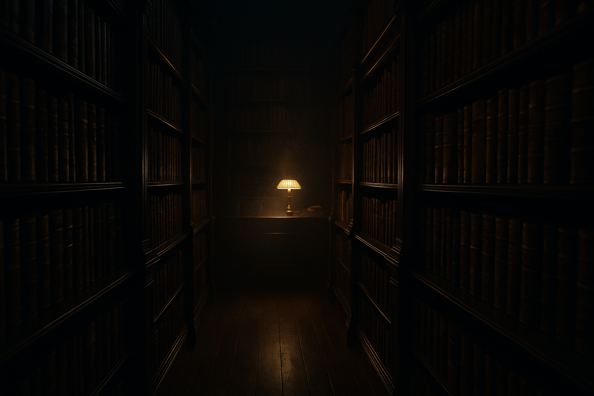

Você vive paralisado pela pergunta:
"Por onde eu começo?"
Se você já se pegou no Instagram ou em grupos de estudo digitando: "Qual a ordem para ler Mário Ferreira?", "Por qual livro começo?", "Qual a obra mais importante?", ou se perguntando "Comprei o livro X, fiz bem?"... você não está sozinho.
Essa paralisia da dúvida é o maior obstáculo para uma formação séria. Você passa mais tempo pesquisando o caminho do que efetivamente caminhando. Enquanto você busca o "começo perfeito", seu tempo precioso se esvai e sua formação intelectual fica estagnada.
Pare de Procurar o Começo.
Adquira o Caminho Inteiro.
Apresentamos o Acervo Completo de Mário Ferreira dos Santos. A resposta definitiva para a sua busca. Nós não apenas reunimos tudo, mas organizamos o material para que você nunca mais precise perguntar "e agora?". Este é o alicerce sobre o qual toda a sua vida intelectual será construída.
O Acervo Completo Inclui:
Todos os Livros
A obra completa em formato digital, organizada segundo o critério de suas filhas. A base para entender toda a sua filosofia.
Aulas com Áudio Premium
Dezenas de horas de aulas com a melhor qualidade de áudio disponível. Editadas manualmente, sem robôs, para uma clareza impecável.
Transcrições das Aulas
Acompanhe, estude e faça anotações. O material transcrito potencializa o seu aprendizado e a fixação do conteúdo.
Palestras Raras
Acesso a palestras e intervenções que revelam a profundidade e a aplicação do pensamento de Mário Ferreira dos Santos.

Conheça o Titã Brasileiro
Mário Ferreira dos Santos (1907-1968) foi um filósofo, tradutor, e um dos maiores pensadores brasileiros do século XX. Autor de uma vasta obra, a "Enciclopédia de Ciências Filosóficas e Sociais", ele criou um sistema filosófico próprio, a Filosofia Concreta. Ignorado pela academia e pela mídia, seu trabalho é a chave para quem busca uma formação intelectual independente e robusta, longe das ideologias que dominaram o país.
Suas Dúvidas, Respondidas de Forma Direta:
Qual a melhor forma de começar? Existe uma ordem para ler as obras?
Esta é a dúvida mais comum e a mais importante. A resposta não está em um único livro, mas no acesso ao sistema completo de pensamento. Este acervo foi criado para resolver EXATAMENTE isso. Nós não apenas reunimos tudo, mas organizamos o material seguindo a lógica do próprio autor e o critério de suas filhas. Em vez de dar um passo incerto comprando uma obra avulsa, você recebe o mapa completo. A melhor forma de começar é ter tudo à sua disposição, de forma ordenada. É isso que oferecemos.
"Não tenho dinheiro agora / Vou esperar o cartão virar."
Entendemos a prudência. Mas reflita: quanto vale o fim da sua paralisia intelectual? R$40 é menos que um lanche em família, menos que uma assinatura mensal de streaming que te distrai em vez de te formar. Este não é um gasto, é o melhor investimento na sua capacidade de PENSAR que você fará este ano. Adiar essa decisão é adiar o seu próprio crescimento por um valor simbólico.
"Não tenho tempo para estudar mais nada."
Este material não é "mais uma coisa" na sua lista. É o mapa que dará sentido a todas as outras leituras. Mário Ferreira te ensina a PENSAR, a organizar o conhecimento. Ao investir uma hora por semana aqui, você ganhará dezenas de horas que seriam perdidas com leituras infrutíferas. Pare de correr sem direção. Comece a construir com a ferramenta certa.
"Já tenho muitos livros na fila para ler."
Muitos de nós sofremos da "tsundoku" – a arte de comprar livros e não os ler. Isso acontece por falta de um pilar central. A obra de Mário Ferreira não é mais um livro para a pilha, é a fundação que vai te dar o critério para saber O QUE ler, COMO ler e POR QUE ler. Ele vai transformar sua pilha de livros de um monumento à ansiedade em uma biblioteca com propósito.
"Mas já tem conteúdo dele de graça no YouTube."
Sim, e isso é ótimo para uma primeira impressão. Mas o que oferecemos é diferente. É o acervo completo, organizado e, crucialmente, com o áudio que EU tratei manually, garantindo a melhor qualidade sonora possível para um estudo sério. Não deixe sua formação depender de áudios abafados e material desorganizado. Aqui, você tem o pacote definitivo.
Seja Um Agente na Restauração da Cultura Brasileira.
Adquirir este acervo é mais do que um ato de auto-aperfeiçoamento. É um voto de confiança na alta cultura. É um passo para se tornar não apenas um consumidor de ideias, mas um homem culto, com uma base intelectual sólida, capaz de influenciar sua família, seus amigos e sua comunidade.
Acesso vitalício a todo este legado por um pagamento único de:
Sua jornada para a verdadeira cultura começa agora.